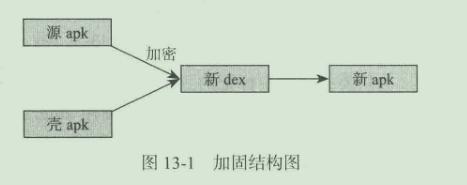

Android应用加固原理
加固原理解析
加固的过程需要三个对象：
需要加密的apk（源apk）
自己的壳程序apk（负责解密apk工作）
加密工具（将源apk进行加密和壳dex合并成新的dex）

加固的主要步骤：拿到需要加密的apk和自己的壳程序apk，然后用加密算法对源apk进行加密，再将壳apk进行合并得到新的dex文件，最后替换壳程序中的dex文件即可，得到新的apk，这个新的apk也叫做脱壳程序apk（它的主要工作是解密源apk，然后加载apk，让其正常运行起来）。
常用反编译工具：jd-gui、dex2jar。
Android中的so加固原理
基于对so中section加密实现so加固
技术原理
加密过程：找到so文件中一个section的起始地址和大小就可以对这个section进行加密了。
解密过程：对于一个so文件，当被加载到程序后，可以使用__attrbute__((constructor));这个属性（这个属性优先于main方法之前执行，类似java中的构造函数，C++的构造函数即是基于这个属性实现的）。
基于对so中的函数加密实现so加固
Android逆向分析基础
逆向工具
- apktool
- dex2jar+jd-gui
- JEB和Jadx
- Xposed
- Cydia Substrate
- ZjDroid
- IDA
打开系统调试总开关
Android中一些常用的配置信息都存放在/system/build.prop文件中。
通过使用getprop和setprop命令，可以获取和设置这些属性，另外ro开头的属性是不允许后期修改的。
而/system/defult.prop中的ro.debuggable（当Dalvik虚拟机从Android应用框架中启动时，这个值为1）这个值如果为1，那么系统中所有的程序都是可以调试的。如果该值为0，则会判断程序AndroidManifest.xml中android:debuggable元素是否为true，如果为true则开启调试支持。
设置ro.debuggable的三种方式：
- 直接修改default.prop文件中的值，然后重启设备。
- 改写系统文件，重新编译系统镜像文件，然后刷入到设备中。
- 注入init进程，修改内存中的属性值。
网上已有最后一种方式（最稳定）的实现工具mprop
反编译神器apktool和Jadx
分析apktool的源码
源码地址为https://code.google.com/p/android-apktool/。github的地址：https://github.com/iBotPeaches/Apktool。
Jadx源码分析
源码地址：https://github.com/skylot/jadx。
HOOK神器Xposed
编写模块功能
暂略，后面争取开一章学习
脱壳神器ZjDroid
源码地址：http://github.com/halfkiss/ZjDroid
工具命令
dump_dexinfo
用于获取应用运行时内存中的dex信息。对应函数为DumpDexInfoCommandHandler。
用法am broadcast -a com.zjdroid.invoke --ei target [pid] --es cmd '("action":"dump_dexinfo")'
dump_dexfile
用于dump出应用内存中dex文件。对应函数为DumpDexFileCommandHandler。
用法：am broadcast -a com.zjdroid.invoke --ei target [pid] --es cmd '("action":"dump_dexfile", "dexpath":"*****")'
其中dexpath参数代表需要脱壳的dex文件，也就是应用程序文件。
脱壳后的文件在/data/data/xxx/files/dexdump.odex
backsmali
该命令与上一命令功能差不多，只不过还增加了把dex文件转化为smali文件的功能。
命令：am broadcast -a com.zjdroid.invoke --ei target [pid] --es cmd '("action":"backsmali", "dexpath":"*****")'
最终生成文件在/data/data/xxx/smali下。
dump_mem
这个命令用来dump出应用程序运行时内存中指定开始位置和长度的内存块数据的。对应函数DumpMemCommandHandler。
命令：am broadcast -a com.zjdroid.invoke --ei target [pid] --es cmd '("action":"dump_mem", "start":111, "length":222)'
其中start和length都是十进制。
dump_heap
该命令用于dump出虚拟机的堆内存信息，可以用于java heap工具分析。
命令：am broadcast -a com.zjdroid.invoke --ei target [pid] --es cmd '("action":"dump_heap")'
dump_class
这个命令主要用于dump出dex文件中的类信息。因为在DexFile对象中有一个隐藏的方法可以把dex文件中所有类名获取到getClassNameList。
命令：am broadcast -a com.zjdroid.invoke --ei target [pid] --es cmd '("action":"dump_heap", "dexpath":"*****")'
invoke
这个命令用于运行时动态调用Lua脚本，该功能可以通过Lia脚本动态调用Java代码。
命令：am broadcast -a com.zjdroid.invoke --ei target [pid] --es cmd '("action":"invoke", "filepath":"*****")'
工具日志信息
两个tag可以用于查看相应日志：
zjdroid-shell-{package name}：该tag可以查看上面每个命令执行的结果，便于查看命令执行状态。
zjdroid-apimonitor-{package name}：该tag可以监听对应包名应用调用的API信息，类似于运行时权限请求。
Native层Hook神奇Cydia Substrate
略，有机会再尝试。
静态方式逆向应用
smali语法
手动注入smali语句
ARM指令
动态调试smali源码
步骤：
- 建议apk：修改debug属性为true，同时加上waitForDebug，从而允许调试
- 回编译apk：回编译并签名、安装
- 将反编译samli工程导入Eclipse
- 设置远程调试
- 调试apk程序
- 编写代码实现核心逻辑
jeb也有调试功能，只需要加载app，然后在adb中运行am start -n [packagename]/[packagename].[Activity] -D即可attach上去。
IDA调试so源码
获取android_server
在IDA目录下/dbgsrv/android/server。将该文件移动到设备目录/data下，接着运行，这样就打开了监听设备的端口（这里以23946端口为例，可以通过-p参数修改端口）。
然后运行adb命令：adb forward tcp:远程设备端口 tcp:本地端口，即可以写成adb forward tcp:23946 tcp:23946。
IDA获取进程信息
打开IDA，在Debugger中选择Android debugger选项，然后attach上去（127.0.0.1:23946）。
找到函数地址下断点
到这里就跟平时elf调试差不多了，略过
Android中常见漏洞分析
解压文件漏洞分析
因为ZipEntry对传入的文件名没有限制，导致可以使用../等字符从而随意覆盖本地文件。
录屏授权漏洞分析
由于提示信息展示的时候没有做省略处理，从而把最重要的提示文案隐藏，导致用户被骗，同意授权。